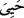
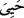
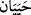
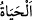
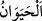
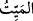

Ey Yusufların derisini parçalayan!
Kurt olarak kalkacaksın bu ağır uykudan.
Huyların birer birer kurt hâline gelip
Öfkeyle senin uzuvlarını parçalar.
Döktüğün kan, kısasa rağmen sen öldükten sonra uyumaz.
Öldüm, kurtuldum deme.
Bu peşin kısas, hile yapmaktır
Âhiretteki kısas yanında bu bir oyundur.
Bu yüzden Allah dünyayı oyun diye niteler.
Çünkü bu cezâ, o cezâ yanında bir oyundur.
Bu cezâ, savaş ve fitneyi dindirir.
Buradaki sünnet etmek, oradaki iğdiş etmek gibidir.
“Âhiret yurduna (oradaki hayata) gelince,
İşte asıl yaşama odur.”
Şüphesiz ki, cennet hayatı asıl ve gerçek hayattır; çünkü ölüm ve yokluk ona ârız
olmaz. Yahud da o, zâtı itibarıyla canlıdır ki bu bir mübâlağa ifâdesidir.
“ (hayevân)”; “ (yaşadı)” fiilinden masdardır ve bu hayat sâhibi olan
(hayevân)”; “ (yaşadı)” fiilinden masdardır ve bu hayat sâhibi olan
canlılara isim olarak verilmiştir. Aslı “  (hayeyân)” dır; eliflerden birinin
hazfedilmemesi için ikinci “yâ”, “vâv”a kalbedilmiştir. Bu, “  (hayât)” lafzından
daha çok mübalağa ifâde eder. Zira “ sîgası, devamlı bir canlılık ve hareketlilik
sîgası, devamlı bir canlılık ve hareketlilik
ifâde eder. İşte burada mübâlağayı dile getirmek için “ (hayevân)” lafzı, “(hayât)” lafzına tercih edilmiştir.
“Keşke” onlar bu dünyadaki hayatın süratle yok olacak ârizî bir hayat olduğunu
“bilmiş olsalardı!”
Yâni keşke onlar asıl bir hayat olmayan dünya hayatını, asıl ve gerçek bir hayat olan
âhiret hayatına tercih ettiklerinin farkında olsalardı! bilmiş olsalardı!
et-Te’vîlâtü’n-Necmiyye’de der ki: Bu âyet, dünya hayatının cansız ve ölü olduğuna
işâret eder. Zira Allah Teâlâ kâfiri, canlı olduğu halde “ (meyyit)” yâni “ölü” diye
isimlendirmiş ve şöyle buyurmuştur: “Sen ölülere işittiremezsin” (Rum, 30/52). Ve
yine buyurmuştur ki: “Diri olanları uyarsın diye...” (Yasin, 36/70). Böylece sabit oldu
ki, dünya ve içindekiler aslında cansız ve ölüdürler; ancak Allah’ın îman nuru ile hayat
verdikleri canlıdır. Âhiret, âlem-i ervâh ve âlem-i melekûttan ibarettir; bunların ise
tümü canlıdır. Allah Teâlâ âhireti, “ (hayevân)” diye isimlendirmiştir. Zira
(hayevân)” diye isimlendirmiştir. Zira
“hayevân” kelimesi, kendisi canlı ve kendisinde bir canlılık ve hayat göstergesi olan
şeye denir.
Böylece onun bütün cüzleri, parçaları canlı olmuş olur. Bu sebeple âhiret canlıdır;
çünkü bütün cüzleri diridir. Hadiste şöyle vârid olmuştur: “Şüphesiz ki cennet;
ağaçları, meyveleri, köşkleri, bahçeleri, nehirleri ve nihayet toprak ve çakıl taşlarına